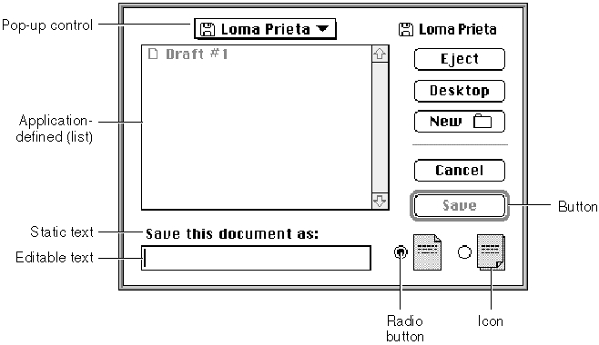

Legacy Document
Important: The information in this document is obsolete and should not be used for new development.
Important: The information in this document is obsolete and should not be used for new development.


Items in Alert and Dialog Boxes
All dialog boxes and alert boxes contain items--such as icons, text, controls, and QuickDraw pictures. You use resources called item lists to specify which items you want to appear in your alert boxes and dialog boxes. You can even define your own items--
for example, a picture whose appearance changes. Figure 6-9 illustrates most of these item types.Figure 6-9 Typical items in a dialog box

Your application enables or disables the items it includes in its dialog and alert boxes. An enabled item is one for which the Dialog Manager reports user events involving that item; for example, the Dialog Manager reports to the application when a user clicks the enabled Cancel button shown in Figure 6-9. A disabled item is one for which the Dialog Manager does not report events. For example, the Dialog Manager does not report to the application when the user clicks or drags the static text item "Save this document as" in Figure 6-9 because that item is disabled.
Don't confuse a disabled item with an inactive control. When you don't want the
Control Manager to display visual responses to mouse events in a control, you make
it inactive by using the Control Manager procedureHiliteControl. For example,
until the user types a filename, the Save button in Figure 6-9 is inactive. The Control Manager displays an inactive control in a way (such as by dimming it) that shows it's inactive. The Dialog Manager makes no visual distinction between a disabled item and an enabled item; the Dialog Manager simply doesn't inform your application when the user clicks a disabled item.You should use
HiliteControlto dim a control in dialog box whenever the user can't use that control. For example, Figure 6-8 shows a modeless dialog box with a dimmed Stop button. The Stop button is dimmed because it has no effect until the user clicks the Search button. When the user initiates the search operation by clicking the Search button, the Stop button becomes active, and the Search button is dimmed.You should use the Control Manager procedure
HiliteControlto make the buttons and other controls inactive in a modeless or movable modal dialog box when you deactivate it. TheHiliteControlprocedure dims inactive buttons, radio buttons, checkboxes, and pop-up menus to indicate to the user that clicking these items has no effect while the dialog box is in the background. When you activate the dialog box again, useHiliteControlto make the controls active again.You store information about all dialog or alert box items in an item list resource. When you use Dialog Manager routines to invoke alert boxes or create dialog boxes, the
Dialog Manager gets most of the descriptive information about them from resources.
The Dialog Manager calls the Resource Manager to read into memory what it needs
from the resource file.